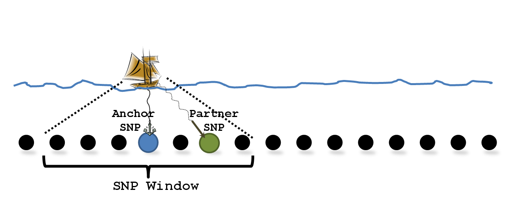

4 SnipSnip GWAS
A genome-wide association study (GWAS) can be performed using SnipSnip where each SNP is considered in turn as the anchor SNP and is tested for association with help from the partner SNP, see figure 1.

Figure 1. Diagram illustrating the anchor SNP and partner SNP with a SNP window of size 6.
The anchor SNP is simply the SNP that is being tested for association.
The partner SNP is chosen from a SNP window surrounding the anchor SNP and is the SNP with the “best” (not highest) LD with the anchor SNP. See section 5 for more infomation on how the partner SNP is chosen.
The artificial-imputation (AI) test is a likelihood ratio test comparing a logistic regression model with the partner SNP only against one with both the anchor SNP and partner SNP. The test produces a  test statistic with one degree of freedom and tests the significance of the anchor SNP whilst conditioning for the partner SNP. An equivilent linear regression test is also possible.
test statistic with one degree of freedom and tests the significance of the anchor SNP whilst conditioning for the partner SNP. An equivilent linear regression test is also possible.
This is essentially a simple test and is only effective due to the manner in which the partner SNP is chosen.
For more details concerning the methodology, please read the accompanying manuscript Howey and Cordell (2014).

{kind=link}